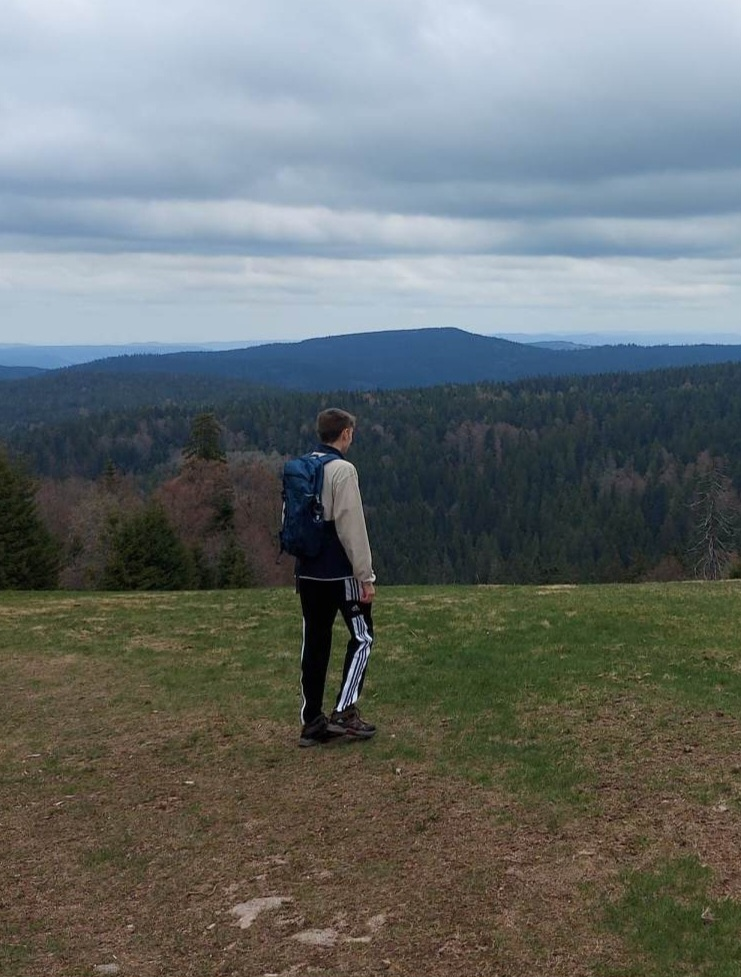
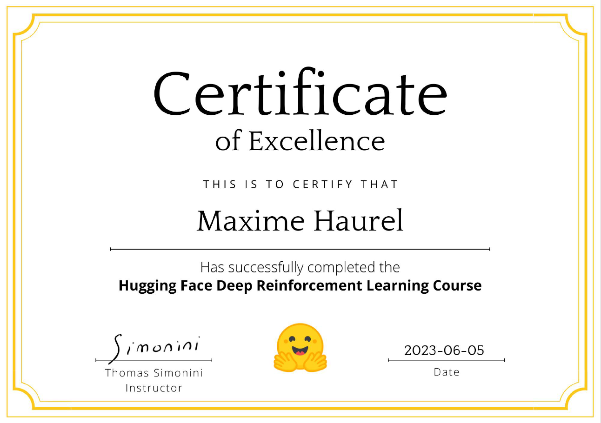
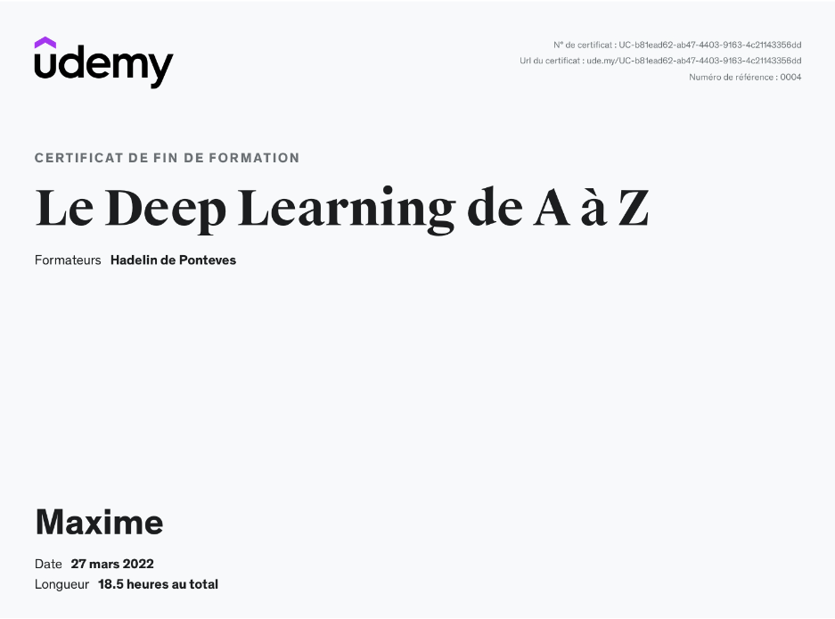
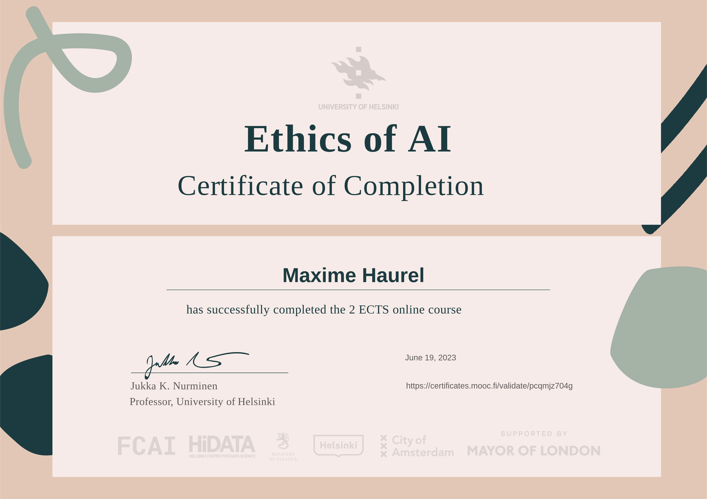
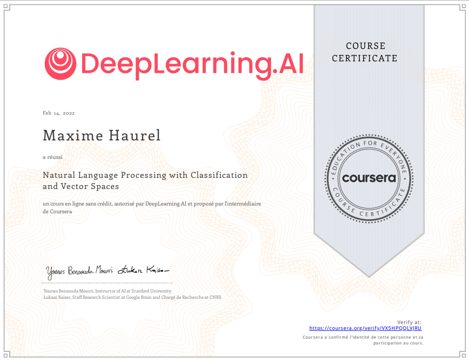

About Me
I am a 22 years old french cognitive sciences student and AI developer. For the past 3 years, I've been studying cognitive sciences at IDMC in Université de Lorraine in Nancy, France.
I worked for 1 year as an Artificial Intelligence developer alongside my studies. During this year, I focused on developing a Machine Learning model that can automatically process motion capture data.
I am still enrolled in an apprenticeship program as part of my Cognitive Sciences MSc. I work as an Developer at Datanello where I am focused in developing web applications as well as intelligent solutions.
Since I was a child, I feel deeply passionated about sciences. By reading academic research and by doing an internship in the LORIA laboratory, my willigness to do research has increased a lot. That is why my aim is to get enrolled as a PhD candidate in Artificial Intelligence.
Alongside my studies and my job, I create projects that involve a wide range of my skills to practice. These projects are open source, available on my GitHub and you can have a preview at these in the Projects section below.
By reading and doing projects, I've acquired many skills in Machine Learning, Reinforcement Learning but also in Python and React.
I am available to all propositions concerning projects or work. I am active on Kaggle and LinkedIn and my projects can be found on my GitHub profile.
My Projects
FitTrack
FitTrack is a web application that tracks an user's weight. The app is developed with the framework React and is connected to an API that provides authentication and users information.
Neural network concept interpreter
During an internship in LORIA Nancy, France I built a software able to explore the layers of a neural network to find underlying concepts linked to existing knowledge. This project is developed in Python and is fully open-source.

Preventing Forest Fires
With the PyTorch library, I developed a model that is able to predict whether there will be a fire from satellite photos. The model can be queried from an interface in React.
Teaching an AI to survive
With Unity and Reinforcement Learning, I teached an AI to survive in a small environment. The task was to pick up wood to put in the campfire while avoiding to fall in the void. This project is not available on GitHub but maybe will soon...
Human pose 2 robot
I developed a program which reads the pose of a human and tells the robot to mimic it. Works with the robot Pepper and Nao and even with the simulator embedded in the software Choregraph.
Thanks to the Gymnasium library, I learned about Reinforcement Learning to produce intelligent agents.
My Certifications
Since I started to be interested in AI, I earned a lot of skills in various AI domains that the certifications I obtained can assess.



